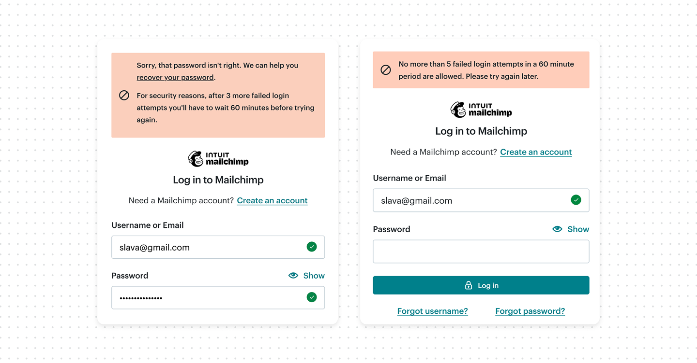
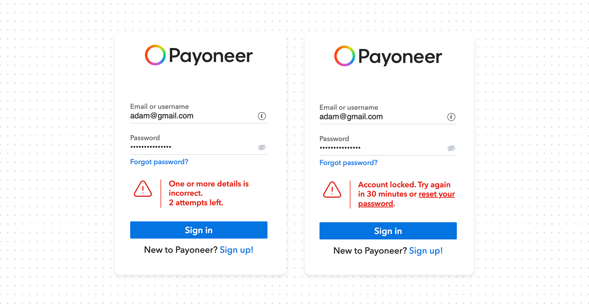
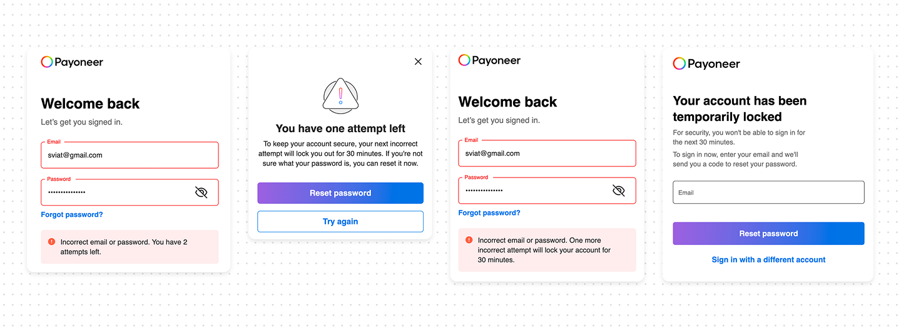
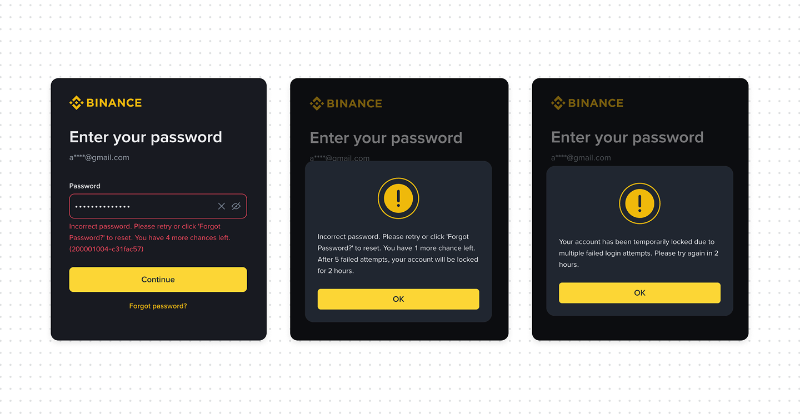

How to design soft password lockout correctly

Most login systems lock users after several failed attempts with good intentions: preventing brute-force attacks. The execution, though, often creates confusion instead of security.
Here’s what happens in practice. A user enters the wrong password three times and suddenly sees: “Too many login attempts. Please try again later”.
They don’t know how long the lockout lasts, and what to do next. A well-designed soft lockout avoids this entirely.
What a soft lockout actually is
A soft lockout is a temporary restriction triggered by repeated failed login attempts. Unlike a hard lockout, it resolves automatically after a short period (30-60 min), but after a few lockouts, the user may be blacklisted.
What good UX looks like
- Warn before lockout happens. If there’s a limit (e.g., 5 attempts), communicate it early. Users should know they are approaching a restriction before they hit it.
- Show remaining attempts clearly. A simple counter reduces repeated failure loops and frustration.
- Explain consequences before the final attempt, clearly state what will happen.
- After lockout, give explanations for how long to wait, and whether they can reset the password. Provide a “reset password” or “contact support” actions.




Bottom line
A soft lockout should never feel like punishment. Its job is to slow attackers down while keeping legitimate users informed and in control. The moment users understand what’s happening, how long it lasts, and how to recover immediately, the experience stops feeling broken and starts feeling secure.
Soft lockout is actually just the first step. On its own, a soft lockout doesn’t permanently block a user, but after several soft lockouts, might be escalates to a hard lockout. A hard lockout will block the user completely, and the account can only be unlocked once they contact an administrator or support.
Additionally, security engineers and the development team use other methods to determine who should be blocked. For example, For example, analyzing login patterns and flagging anomalies — like an unusual number of attempts in a short time, requests from unknown locations, or suspicious device fingerprints.